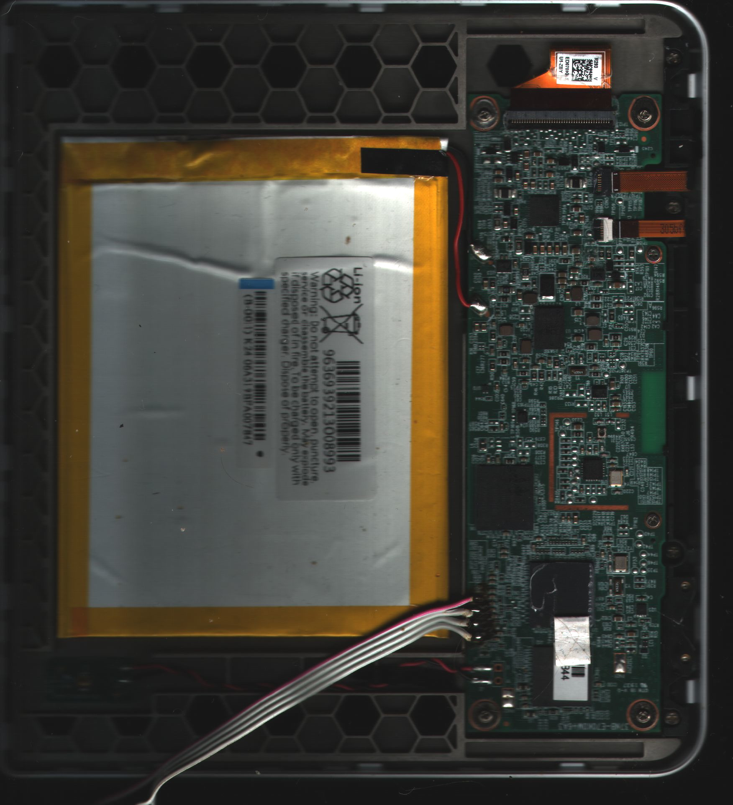

Kobo Libra H2O (kobo-librah2o)
|
 insides | |
| Manufacturer | Kobo |
|---|---|
| Name | Kobo Libra H2O |
| Codename | kobo-librah2o |
| Released | 2019 |
| Category | testing |
| Original software | Kobo firmware |
| Hardware | |
| Chipset | Freescale i.MX6 SLL |
| CPU | 1x 1 GHz Cortex-A9 |
| GPU | PXP + EPDC |
| Display | 1680x1264 eInk |
| Storage | 8GB eMMC |
| Memory | 512M |
| Architecture | armv7 |
{kind=link}
| USB Networking |
Works
|
|---|---|
| Flashing | |
| Touchscreen |
Works
|
| Display | |
| WiFi |
Works
|
| FDE | |
| Mainline |
Works
|
| Battery | |
| 3D Acceleration |
Unavailable
|
| Audio |
Unavailable
|
| Bluetooth |
Unavailable
|
| Camera |
Unavailable
|
| GPS |
Unavailable
|
| Mobile data |
Unavailable
|
| SMS |
Unavailable
|
| Calls |
Unavailable
|
| USB OTG / USB-C Role switching | |
| NFC | |
| Accelerometer |
Broken
|
|---|---|
| Magnetometer | |
| Ambient Light | |
| Proximity | |
| Hall Effect | |
| Barometer | |
| Power Sensor | |
| Camera Flash | |
|---|---|
| Keyboard | |
| Touchpad | |
| USB-A | |
| HDMI/DP | |
| Ir TX | |
| Ir RX | |
| Stylus | |
| Haptics | |
| Ethernet | |
| FOSS bootloader | |
Contributors
- Andi (has only a device with a broken screen)
Users owning this device
Mainlining status
A basic devicetree is upstream, display waits for testing
How to enter flash mode
Contrary to non-waterproof eBook readers, the Libra H2O does not have an internal replaceable µSD but an internal eMMC, so things have to be flashed on the device. On factory uboot fastboot mode can be entered using pagedown while powering on. Alternatively using the serial console and enter fastboot 0 on the uboot prompt. Note: if nothing which looks like a bootloader is found on startup, the following device
hid-generic 0003:1FC9:0128.001B: hiddev1,hidraw1: USB HID v1.10 Device [ NXP SemiConductor Inc SE Blank 6SLL] on usb-0000:00:14.0-6.1/input0
appears. It can be accessed using a tool called uuu from a package mfgtools to start e.g. uboot from USB. So cat /dev/zero >/dev/mmcblk0 does not brick the device, only a wrong U-Boot might be a problem.
Accessing eMMC
The eMMC can be exported as mass storage also in factory u-boot enabling full backups by the following command:
ums 0 mmc 0
With the pmOS-installed bootloader, you can also enter mass storage by Page*Up* while powering on
Backing up and restore
What works here flashing bootenv to bootcmd=ricoh_watchdog disable; ums 0 mmc 0 the needed binary is at: https://misc.andi.de1.cc/ums-env.bin
so do a
fastboot flash bootenv ums-env.bin
and enter fastboot by pressing pagedown while powering on after the flash succeeds, do
fastboot reboot
The emmc will appear as /dev/sdX on your host. Now backup the full /dev/sdX. You can write back the original bootenv (if otherwise the original contents are restorted) by
mount /dev/sdX1 /mnt dd if=/mnt/etc/u-boot/mx6sll-ntx/u-boot.mmc bs=128K seek=6 of=/dev/sdX umount /mnt
Installation
enable mass storage access in U-Boot (see above) and install using pmbootstrap --sdcard
See also
- U-boot and kernel source
- Upstream Devicetree Source (dts)
- branches kobo/drm-merged-5.X Patched mainline kernels (includes EPD), currently kobo/drm-merged-5.17
- branch kobo-2020-10 more recent u-boot behaving more normal, see corresponding wiki for details
- Wi-Fi driver, branch rtl8189fs
- pmaports!2954 Initial merge request